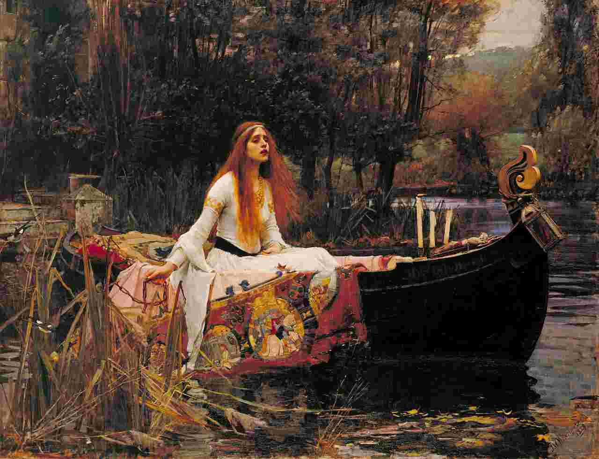

the universe has a weird sense of humor like that. the moment you stop performing for the outcome
and just exist inside the thing you love, everything you wanted finds you anyway.
Quit. Heal. Return. Win.
Alysa Liu was a child prodigy in figure skating — she became the youngest-ever U.S. women’s national champion at 13 and was known for landing ultra-hard jumps like the triple axel and quad. But the pressure and burnout hit hard. After competing at the 2022 Olympics and winning a World Championship bronze, she suddenly retired at just 16, saying she was done with skating and wanted a normal life.
She spent about two years away from competition, went to UCLA, traveled, skied, and rebuilt her relationship with the sport. Then in 2024, she unexpectedly announced a comeback — this time on her own terms, skating because she enjoyed it again.
The comeback became one of the biggest stories in sports: in 2025, only a year after returning, she won the World Championship, becoming the first American woman to do it in 19 years.
Why people connect with her story:
genius kid → burnout → quits early
rediscovers joy outside the sport
returns healthier mentally
wins at the very top again, but with a calmer attitude
Her vibe is unusual for elite sports: very candid, funny, emotionally detached from fame/results, and visibly happier after stepping away and coming back.
"The role of the lover is exactly the same as the role of the artist.
If I love you, I must make you aware of the things you do not see."
- James Baldwin
Create What You Seek
taken from pausuarezgomis's tiktok
Unique Gravitation: What draws you and moves you is entirely your own. It is not meant to move everyone else.
The Artist’s Paradox: Before an artist can create the song everyone is searching for, they first have to feel what it is like to live in a world without that song. They create to find the very feeling they were seeking.
The Internal Compass: We often look to teachers, peers, or external signs to reveal the answers. In reality, your internal guidance system isn’t there to hand you the answers — it is the map.
The Game of Hot & Cold: When you feel yourself getting closer to a sense of true alignment, you are simply detecting the answer that already lives within you. Use your experiences to mark your map with a big red X: “I like it here. I want to come back.”
Women in the Picture by Katy Hessel
Art historian Catherine McCormack challenges how culture teaches us to see and value women, their bodies, and their lives.
Rigid Historical Archetypes: Western art history has long confined women to restrictive, male-defined caricatures — from the idealized beauty of Venus to extreme binaries like the dutiful mother or the deviant monster.
Reclaiming the Narrative: By creating on their own terms, female artists shatter these narrow molds to paint a truer, unfiltered picture of the world that honors the complexity and "messiness" of the female experience.
Knowledge as a Shield: While tracing the historical roots of misogyny in art can feel heavy, understanding this context serves as a practical tool to dismantle the patriarchal "cages" that restrict how women see themselves and are seen by society.
The Restriction of the Female "Gaze"
The text explains that historically, women were literally and systematically prevented from "looking."
The Fear of Challenge: They were barred from studying books, exploring the professional sphere, or looking closely at the "world of men." This wasn't just a metaphor—it was a deliberate restriction to ensure women wouldn't find aspects of society they wanted to challenge or change.
Exclusion from the Body: By blocking women from becoming doctors or classical artists, men maintained absolute control over how women’s bodies were medically treated and visually represented in paintings, sculptures, and medical textbooks. Consequently, historic depictions of women rarely reflect how women actually experience or see themselves.
Deprived of Agency (The Lady of Shalott)
To illustrate how literally women were forbidden to look, the speaker references Alfred Lord Tennyson's poem and John William Waterhouse's famous painting, The Lady of Shalott:
The Lady is cursed and confined, allowed to look at the world only through the safe, passive reflection of a mirror. When she finally dares to defy the curse and look out the window directly at the real world (Camelot), her punishment is death. Ultimately, she floats down the river as a corpse, only to be gawked at by knights. This story serves as a cautionary tale about the perils that await women who dare to actively observe the world rather than just exist within it.

Erasure from History (The Royal Academy)
The text points to the hypocrisy of historical institutions like the Royal Academy of Arts in Britain:
Even though women like Angelica Kauffman and Mary Moser were founding members, they were denied any governance or decision-making power. In Johan Zoffany's famous painting depicting the academy's members, the two women were not allowed to stand alongside their male peers. Instead, they were painted as passive portraits hanging on the wall.
This effectively erased their active roles as creators, painting them as objects to be looked at, which fed the historical myth that there simply "were no women artists."
The Core Takeaway: Historically, even when women were highly accomplished creators, they were stripped of their agency. They were forced to be the seen (the object, the portrait, the muse) rather than the seer (the observer, the doctor, the master painter).
Venus, the symbol of love
Internalized Fantasy: The host explains that depictions of Venus (such as Botticelli’s The Birth of Venus) were not created to celebrate women. Instead, they were designed by men to dictate what womanhood should look like, establishing a standard of "ideal" feminine compliance and shaping patriarchy's version of female sexuality.
Modern Commercialization: This idealized, sanitized fantasy of Venus continues to saturate modern culture—from pop icons like Beyoncé and Lady Gaga incorporating the imagery, to commercial brands like Gillette’s "Venus" razors.
The Real Myth: While often imagined as a romantic, seafoam-born goddess, the mythological birth of Venus is highly violent. She was created when the god Cronus castrated his father Uranus, throwing the severed testicles into the sea. Venus emerged from the resulting sea foam.
Erasing Female Reproduction: Because she was born entirely from a male sex organ and has no mother, the Neoplatonic philosophers and Renaissance patrons of Botticelli’s era viewed her as "more divine". This myth actively erases the natural reproductive power of the female body, making the supreme symbol of fertility entirely dependent on a man.
The Rokeby Venus
The Rokeby Venus wainted by Diego Velázquez in the 1600s, this artwork depicts Venus lying with her back to the viewer while Cupid holds a mirror for her. Historically, this painting was "passed around rich circles of men as like a status symbol."
In 1914, suffragette Mary Richardson walked into the National Gallery and slashed the painting. She did this to protest the brutal treatment of imprisoned suffragettes, wanting to highlight the hypocrisy that
"a picture of a nude woman demanded more respect than the actual bodies of half the population"
Twisting the Narrative
Artist Ruby Carr created her own modern version of the Rokeby Venus. She photographed herself lying down with her back to the camera, but with a visible period stain showing through her pants.
The image was taken down by Instagram, proving a hypocritical cultural double standard. It is not the exposure of women's bodies that gets censored, but rather "the actual bodily realities of bodies that's like offensive". Carr was not trying to be provocative; she was simply trying to demystify the taboos surrounding menstruation.
In a noisy, algorithmic world, carve out a digital or physical space to write, think, and build.